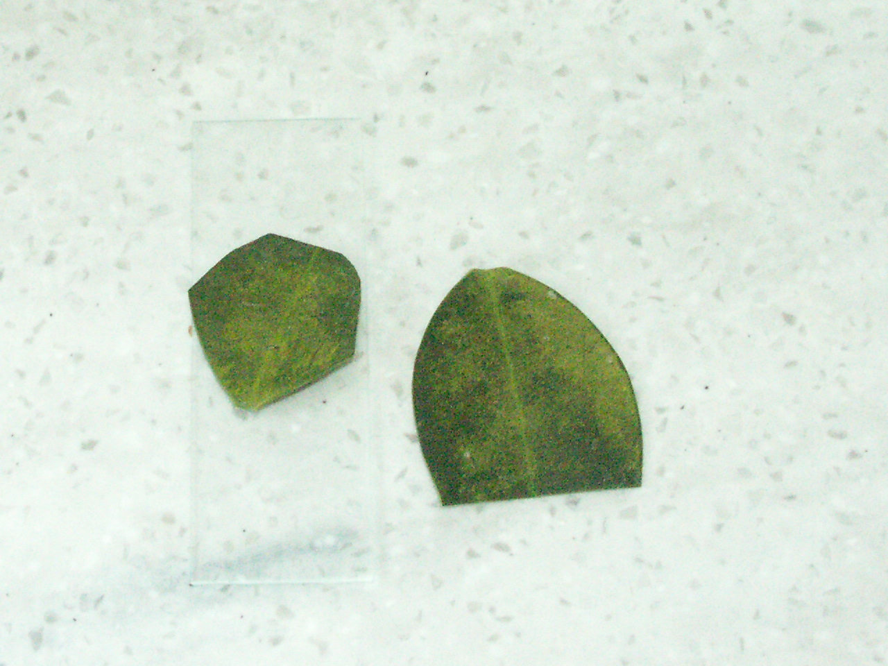
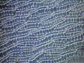
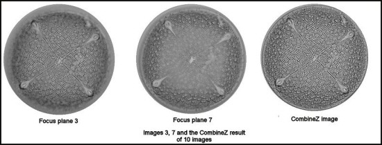
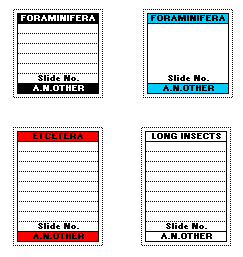
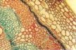
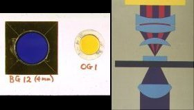
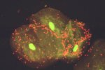
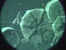

|
• HOME • WHAT IS THE PMS? • WHAT'S NEW • CONTACTING US • CLUB MEETINGS • LIBRARY • ADDRESS BOOK • LETTERS •SALES AND WANTS BALSAM POST COLOUR SUPPLEMENT•SPRINGTAILS• MISCELLANEOUS•RELATED SITES • |
|
Letters 13 April 2017: A query from Mo Vaughan. Please refer to the photos below of a holly leaf. What produces the coating of light green/brown sugar-like deposits? and how are they produced? There are no aphids about yet so it is not aphids and nothing is feeding on them. If someone can answer this mystery please e-mail.me. 
Ernie's Gallery 30 October 2013: From Mike Samworth who has had a letter from Mark Lawley. Mark Lawley writes; "I'm aiming to give an account of the natural history of the central Welsh Marches from the Berwyns south to the Black Mountains, and as far west as Rhayader and east to the Clee Hills. Most accounts of regional natural histories rather neglect less popular groups of invertebrates and cryptogamic plants, and few even mention microscopic groups such as nematodes, rotifers, protozoa, microfungi and algae. I intend to include all these groups, and while it won't be possible to treat them comprehensively, of course, I do wish to remind readers that there's much more to natural history than birds, blooms and butterflies. I'd like the book to be richly illustrated, particularly with images of forms of life that most people are unfamiliar with - hence my approach to the PMS. Collembola (springtails), Thysanura, Diplura, Protura, Psocoptera, and related groups Biting and sucking lice (e.g. Actornithophilus patellatus) Fleas (e.g. Hystrichopsylla talpae, Ceratophyllus styx) Mites (e.g. Scutacarus acarorum on bees, Dermanyssus species, Megninia strigis-otis, Protalges attenuatus, water mites) Tardigrades, Centipedes and millipedes Crustacea (e.g. cladocera such as Daphnia, ostracods, copepods, Chirocephalus diaphanus, fish-lice, Gammarus pulex, Armadillidium pictum, Pentostomida) Molluscs (e.g. some of the small snails and bivalves) Annelids (e.g. oligochaetes, Theromyzon tessulatum) Nematodes (e.g. a typical free-living roundworm, and parasites such as Syngamus trachea, Tetrameres sp., Porrocaecum spp., microfilariae) Hairybacks (Gastrotricha) and Horsehair worms (Nematomorpha) Flatworms (Trematoda) - free-living turbellarians, flukes, tapeworms (e.g. Echinococcus granulosus). For flukes, are photos of their various larval forms available (miracidia, cercaria, etc.)? Images should be of species that are either known from the Marches or are very likely to occur there, although of course photographs don't need to be of organisms collected in the region. I'd also be keen to hear from any PMS members who live in the Marches, and/or who have suggestions about species not listed below that would be worth including." So, if you feel you can contribute, due to where you live, or that you may have photographs suitable, then do get in touch, and I will pass this on to Mark. Mike Samworth. 20 August 2013: A note from the PMS Treasurer. Dear members, I am pleased to tell you that the Quekett Microscopical Club has given a grant to the PMS of £400 per year for the next three years. This is to be used in accordance with their charitable objectives in promoting education and interest in microscopy. These welcome funds will be used to ensure that meetings are free to all, and are open to all. Both will hopefully encourage new people to attend. The balance will be used to continue to improve Balsam Post and keep costs down. On behalf of the PMS and its members, I would like to thank the Quekett for its generous donation. Mike Smith, Hon treasurer. 7 March 2013: Letter from John A Moran. I am seeking information on a Gillett and Sibert Conference microscope. I have conducted intensive searches of the Internet and ploughed through innumerable blogs, and found almost nothing - except for some details provided by Mick Chaplin (info originating from Keih Brocklehurst). Amazingly, Elcomatic just said it's over 50 years old and no longer supported. I can't believe that there aren't a couple of manuals hiding out there somewhere - it's just finding a way to attract their owner's attention that's the problem. If you can help then please contact me.. Thank you. 4 December 2010: Letter from Chris Thomas. Have blogged an article that is really applicable to us microscopists - a way to create an online book to leaf through for free using issuu.com. It is similar to YouTube, but for book, magazine and catalogue publishers - a possible adapted text for both web and the Balsam Post. "I blame my wife! She came home with the comment "Someone sent a digital document to us today at work that you could leaf through like a book on screen. I though it might be an idea for you". Not just for me - PMS members might like to give it a try! Cue detailed internet search, which finally hit gold when I found the issuu.com web site. It is the equivalent of YouTube, but for publishers of books, magazines and catalogues. * You design your document in Word or as a PDF * Upload the document to Issuu * They convert it and store the document online * You can make the document public or private * Embed the document to your site, blog and/or Facebook * You can e-mail a link to contacts * Specify whether visitors can download a PDF or not. I prepared a quick photobook straight away that evening, using photographs of hair samples taken from a PMS Box and from my collection that I had to hand just to test out the system and was impressed! Have a look yourself at issuu.com/miltoncontact/docs/hair-in-colour. If you have or are preparing your own book or editing photographs taken through the microscope, consider creating a Issuu book version to share with us all. Registration for the basic service is free - check it out at www.issuu.com" Feel free to use the article and the photos at link below if appropriate. All Hair samples available from here. 9 January 2010: Letter from Mo Vaughan. Happy New Year to All members. I noticed the letters section is hardly used but I know there is a wealth of microscopical knowledge out there. The reason I write this is because I received a box of slides in the post as I am on a circuit. These slides were Diatoms placed on an aluminium slide, really effective, and the diatoms were themselves a marvel to look at. I have a couple of questions I would like to put to the membership: 1. Is it possible to stain the shell of diatoms to accentuate the beautiful structures that they create? 2. Where or how does one get hold of aluminium slides or do they have to be made up? If you can help me in my questions then please e-mail me, Thank you. 12 December 2009: Letter from Richard Ells. Hi, I am very sad to say that my grandfather Bill Ells has sadly passed away at the grand age of 92. I'm sure he knew many of your members well. He ran a website that he constructed himself called www.desmids.com and I have added a condolences page to allow people that knew him (and those that are viewing his notes and drawings of desmids) to leave their messages and memories of Bill. If any of you knew him and would like to post a message or memory - visit www.desmids.com. His enthusiasm for science lives on in his grandchildren, and his great grandchildren, I wish you and your families at the PMS all the best for the holiday season. Richard Ells. 4 November 2008: Letter from Chris Thomas. Sproughton, a Microscopists Oasis? Coming off the A14 in sleeting rain at Sproughton, I arrived into the bustle of the Eastern Region Microscopy meeting to the promise of an alternative and sunnier day in the company of that erudite species, the Microscopist. In fact, the day’s presentations, woven together in a tale, illustrate the point… (download pdf file size 166KB, for full article and link to photos). 10 March 2005: Letter from Keith Brocklehurst. Early in February 2005 Helmut Reichenauer, a microscopist and, apparently a wine merchant ,from Vienna, enquired about blue-light fluoresence microscopy without resorting to epi-illumination. He owns a Zeiss Axioskop which he is investigating adapting with either Q/I light source or UV LEDs for this technique. I sent details of the Gillett & Siebert Conference microscope which was ideal for this work with a 100W Q/I light source and a massive field condenser, together with examples of acceptable results. I received the following reply from Helmut who can be contacted via his website Click on French Flag and navigate to 'Botanik' to see his excellent micrographs. K.B. Dear Keith, many thanks for your comments of last week plus the 3 impressive photographs. This is exactly the type of work which I would envisage for some time in the foreseeable future, which had prompted me to take you up on the comments in your PMS letter. ...... but your guess is right, that basically I would like to do BLFl with my Axioskop, if at all possible. I will therefore pursue your suggestion of the adaptation of a suitable quartz halogen lamp to start with, whilst watching the growing offer of UV LED's on the side. For example http://shop.dotlight.de/shop/product_info.php/products_id/41?osCsid=27ab15137f7ba82f6a8fa43ecc5ee97d with data sheet at http://shop.dotlight.de/datasheets/ETG-5UV400-30.pdf http://www.eska-technik.com/shop/pi505842317.htm?categoryId=36 show just 2 examples of UV LED's found in Google with keyword 'UV LED'. Will discuss your suggestions and these options with my 'local microscopical advisor' and keep you posted if any significant step forward is achieved. With kind regards from Vienna Helmut Reichenauer PS.: My current white LED illumination is a Conrad 1 W single LED unit, which was locally adapted to my Axioskop one year ago. Meanwhile Zeiss are offering multiLED-units (a 3 x 3 LED matrix) for their new range of AxioImager microscopes. Multi LED arrangements can also be found at http://www.eska-technik.com/shop/pi1694187592.htm?categoryId=29 but I have not yet investigated this further. PPS.: Just thought you might like this 40x0,75 DIC image of the cell structure of a sphagnum (cuspidatum ?) leaf which I made last week. To see a larger version click on the picture below.  14 August 2004: Letter from Ross R. Grunwald. Hello Mike, On December 9, 2003, I listed a request for an ocular for my Vickers M72C scope. A few weeks ago I was contacted by James Battersby, who had read my request and sent me five oculars that fit my microscope. I cannot thank you enough for providing the vehicle that allowed me to complete my scope. I have been searching for nearly a year without success in any other venue. If I can assist the society in any way, please let me know. I live in central California, USA, near San Francisco. Of course, you can remove my listing from your website. Thanks again. Ross R. Grunwald. Thanks for your letter Ross, it's great to get some feedback, particularly if it's complimentary and thanks for your offer of assistance. PMS members can contact Ross, via the link at the top of this page. 10 May 2004: Letter from Bob Town (concessions for PMS, etc. members). Dear Mike, I have known about the activities of the PMS for many years being a keen amateur microscopist myself (Bob was involved in the provision of Auto-Montage for the PMS - refer to Digital Imaging section under PMS Groups). I don't know if this is appropriate news or not for the PMS membership, but they may be interested to know that my company is a new UK supplier of microscopes specialising in the import of microscopes direct from the largest microscope manufacturing plant in China. As the microscopes are sourced direct and not through a chain of middlemen the prices we offer are exceptionally low. The microscopes are branded as GX Microscopes (the Chinese brand name is too unintelligible to be used!) and they are of very high quality from the same factory that turns out microscopes for Nikon and Olympus. We do not normally sell direct to end users and we are in the process of setting up a number of UK distributors. However, to get the brand known, I am prepared to offer the microscopes direct to members of a few selected organisations (e.g. PMS, Quekett, Royal Entomological Society). Furthermore there will be a promotional price valid for the first year (ends 1st May 2005). You can download the catalogue and some datasheets from the web site www.gxmicroscopes.com. I can also send printed catalogues on request. The promotional price is indicated in the Concession Price column. Members wishing to order must provide us with their membership number (I assume there is such a thing). As for my company we are called GT Vision Ltd, we have offices in the UK and USA and you can see from our main website that we have a great deal of expertise in the field of advanced microscopy and imaging www.gt-vision.com. Incidentally, I don't know if you do this sort of thing or not but I could put a link on my GT Vision website to the PMS website, especially if you reciprocate. I look forward to hearing from you. Kindest regards, Bob Town. GX Microscopes. Thanks for your letter Bob.we're happy to add your new company to the list of useful addresses in the Sales and Wants section. Perhaps some of our members will be tempted by your kind offer of promotional prices. We do not have membership numbers in the PMS, but a quick e-mail to myself, or the treasurer is all that is needed as a cross-check. We would be pleased for you to put a link to this web site. 14 April 2004: Letter from Klaus Kemp. This refers to Mick Chaplin's letter dated 10 October 1999 - see near foot of this page. Hello Mick, As far as I can make out your specimen from a Bernard Hartley slide is Asteromphalus heptactis (Breb) Ralfs in Pritchard. Kindest regards Klaus Thanks very much for responding to my letter of so long ago (yours is the only response I've had). Armed with your suggestion I went exploring on the Web and found a useful site. This gives lists of diatoms with links to pictures. I tracked down A heptactis and while I agree it has the same asymmetric structure, I think the general structure is more like Asterolampra marylandica, which unfortunately is symmetrical. Perhaps there has been some cross-breeding! I think there is still some mileage in tracking this down further. Anyone out there with further suggestions? 26 November 2003: Letter from Derek Christie. Hi Mike, I tried Alan Hadley's CombineZ program a couple of nights ago and was both surprised and pleased to find that it really works. I was looking at a specimen of a diatom (Aulodiscus) from my recent PMS box. This was a fairly "thick" diatom and only a few parts were in focus at any one position of the fine focus control. I took about 10 images of the diatom using my Coolpix 950, incrementing the microscope focus setting for each one. Following Alan Hadley's instruction I loaded up the images and ran the program. I was very pleased with the results and I have appended an image of two of the focus planes and the final CombineZ result for you to look at.  Thanks Derek, I will try Alan's program out on some of the images used in the digital imaging section of this web site.7 September 2003: Letter from Keith Brocklehurst. Hello Mick, Strongly recommend the web site of the Institute of Biology at www.iob.org. It has lots of links which are likely to interest a good many of our members. Keith Brocklehurst. Thanks Keith, this address has also been added to the Related Sites section. 7 September 2003: Letter from George Vitt. Dear Mick, Please note that the Web site for the Microscopical Society of Southern California now has a new address: www.msscweb.org/ May I also call your attention to microscopy related images that I have posted on my friend's web site at: http://www.arco-iris.com/George/microscopy.htm where are shown a variety of vintage microscopes and a number of photomicrographs - some from PMS slides. microscopically yours,George Vitt, Corr Sec.,Microscopical Society of Southern California. Thanks George, I have also added your information to the Related Sites section. 17 July 2003: Letter from John Taylor. For microscopy supplies, lab and field equipment members might like to look in at: Alana Ecology, The Old Primary School, Church Street, Bishop's Castle, Shropshire, SY9 5AE. The web site is www.alanaecology.com. Their list of micro supplies is rather short and basic but I did find some of the lab items I wanted. They were prompt and efficient in supplying my requirements and they produce a fascinating catalogue. John Taylor. Thanks John, I have added this to the useful addresses section of Sales and Wants. 23 April 2003: Letter from John Garrett. Re: NBS stock sales: for PMS members wishing to purchase remaining NBS stock at favourable rates visit the order form. Print the form and use the two extra columns to mark your requirements. 23 April 2003: Letter from Liz Young. Wanted, any information on a Spencer Buffalo mono microscope with the number 58016 on it. We have been looking everywhere for some information on this.If you have anything please email me. Thank you, Liz Young. 27 February 2003: Letter from Colin J. Kirk. Mike, Following my recent email about H & E Ltd. it occurred to me that you might find the following worthy of mention on the PMS website as suppliers of materials for microscopists, particularly in view of the demise of NBS. Timstar Laboratory Supppliers Ltd. Timstar House, Marshfield Bank, Crewe, Cheshire. CW2 8UY. Tel; 01270 250459 email:- sales@timstar.co.uk Web-site: www.timstar.co.uk. Rayco Chemical Company Ltd. 199 King Street, Hoyland, Barnsley. South Yorks. S74 9LJ. Tel: 01226 744594 These are suppliers of photographic chemicals mainly but there are many materials of use to the microscopist. D. J. & D. Henshaw. 34 Rounton Road, Waltham Abbey, Essex. EN9 3AR. Tel:- 01992 717663 These are predominantly for entomological supplies. I have dealt with all the above in the recent past with no problems. Hope they are of some use. Regards, Colin. Thanks Colin, I have added these to the useful addresses section of Sales and Wants. 27 February 2003: Letter from Martyn Edelsten. I have inherited several Vickers M14/2 microscopes which I am passing on to colleagues in developing countries. I am looking for spare bulbs to send with them. I am having difficulty finding them. Do you know a UK supplier who could give me a good quote? The Philips part numbers off the box are 13347 C, 15W, 6V, PX22d. Thanks, Martyn Edelsten, Centre for Tropical Veterinary Medicine, Easter Bush, Roslin, Edinburgh, Midlothian. EH25 9RG. Tel: 44 131 650 6271: Fax: 44 131 445 5099 Hello Martyn, I am reproducing an earlier letter, which hopefully will provide the answer to you problem and assist you in this worthwhile exercise. If not, can anyone else help? Letter from Sidney Harvey, on 14 January 2002. [with contact info updated by Peter Nicholson] Microscope bulbs. Hello there, One of the most frequently asked questions, among the microscopy fraternity is "Do you know where I can get a bulb for such and such a microscope?" Light Source Supplies. Unit 3, Keepers Cottage Barns, West Barsham, Norfolk. NR21 9NL [Tel.no. 01328 853333] is an excellent, and helpful supplier. The only slight problem is that their minimum order is £25.00. As most bulbs cost in the region of £12.00 or so each, this is not too much of a snag, it only means you buy a spare. 5 February 2003: Letter from John Garrett. Northern Biological Supplies. Mick, You may wish to update the list with the following changes: Herts Optical Services Telephone number is now: 01727 859392. NBS is now closing after the death of Eric Marson on 5 Dec 2002. A final chance to buy any remaining stock will be on 11 and 12 February at NBS, 3 Betts Avenue, Martlesham Heath, Ipswich IP5 7HR. For further information contact John Garrett by e-mail. Cheers, John. Thanks John, the above changes have been made to the Useful Addresses section of Sales and Wants. 20 January 2003: Letter from Derek Christie. Member's Web Site. Dear Mike, I was wondering if you would include my web site address in the "Related Links" section of the PMS web site. I have a few images made using Bernard Hartley, PMS slides in the Algae/diatoms/Darkfield diatoms section of my site. I will be adding more PMS slide images when the boxes start to flow again. Please have a browse around my site and, if you think that it is suitable (and good enough), add it to your list. My site is still under development and I intend to fill in the text gaps in the various descriptions. I suspect that I will be very interested in the proposed PMS Digital Imaging Group. My web URL is www.microview.org.uk. Thanks and regards, Derek (PMS). Thank you Derek, your site has been added to the Related Sites section. I would be interested in feedback on the D. I. Group. 23 October 2002: Letter from Fr David, Hilgay. Balsam Post: Plankton Net Making by Ernie Ives. In the past I have tried to make nets but my lack of sewing skill has resulted in very poor results. So full marks to Ernie for suggesting contact adhesive to make the seams. I have tried his method and the results are very acceptable. One problem I did have was the lack of suitable material for making the frame. However those black plastic flower pots which come from the garden centre came to the rescue! I took two identical ones.(The 2 litre size has a top diameter of about 17cm, just right for the net I was making.).First cut away the rim and about 3cm of side wall from one pot using kitchen scissors and coat the inside of the rim and wall with contact adhesive. Do the same with the other pot, but this time with 4cm of side wall, and coat the outside with adhesive.Paint a 5cm band around the mouth of the net with adhesive and allow all to dry.Place the 4cm walled rim inside the mouth of the net and press the material firmly onto the rim.Carefully slide the 3cm walled rim up the outside of the net from the bottom and press it into place so that the net is sandwiched between the two plastic rims. Now make some holes for the bridle and all is done. Best wishes to all, Fr David, Hilgay, Norfolk. 22 September 2002: Letter from >Derek Christie. PMS Slide box 96/33. Dear Editor, I have just recently finished with PMS slide box no.96/33 which contained diatom slides by Bernard Hartley. I was absolutely delighted with this set of slides and enjoyed every minute I spent examining the diatoms. I thought that I might send you some images of these diatoms for the enjoyment of other members who have access to the internet. I have attached 3 images to this email:
Many thanks to Bernard Hartley and regards to all PMS members, Derek Christie (PMS). 16 April 2002: Letter from Mike Garcia. Cyanobacteria. I'd be interested to hear from anyone who has recently been involved in sampling public bathing ponds in the UK for cyanobacteria, especially if you identified toxic strains. Thanks, Mike Garcia. Highgate London. 0207 681 8005/6 16 April 2002: Letter to Mike Samworth fromChris Thomas. Virtual Travel Web Site. Hello PMS, Could you include my Homepage on the links page? It includes a large element of microscopy, photography and artwork in the form of a virtual travel company. Many thanks, Chris Thomas (PMS) Thanks Chris, your site has been added to the Related Sites section. 10 February 2002: Letter to Mike Samworth from Robert A. Bloodgood. Microscopes on Stamps. Dear Mr. Samworth, With a name like the Postal Microscopical Society, I thought your group might find it an interesting addition to your web site to link to pages I have created showing microscopes on stamps from around the world. Do take a look at at my site and feel free to link to this site if you think it might be of interest to your membership. Warm regards, Robert A. Bloodgood. Thanks Robert I have also added a link in the Related Sites section. 14 January 2002: Letters from Sidney Harvey. 1) Microscope bulbs. Hello There, One of the most frequently asked questions, among the microscopy fraternity is "Do you know where I can get a bulb for such and such a microscope?" Light Source Supplies, Benbow Lane, Bishops Stortford. CM23 2NA. [Tel.01279 652 143] is an excellent, and helpful supplier. The only slight problem is that their minimum order is £25.00. As most bulbs cost in the region of £12.00 or so each, this is not too much of a snag, it only means you buy a spare. 2) Incorrect/out of date adverts. With reference to my other e-mail on Light Bulbs, I sent an e-mail to Peter Nicholson in response to his ad, re. bulbs. It came back "Unable to Deliver" and several weeks ago I supplied Lawrence Hartley with copies of the Patholux manual he needed..His request is still advertised. To cut down on trying to help those, who give an incorrect, or outdated, Email address, and replying to outdated ads. which is a waste of ones time, would it therefore be a good idea to put a time limit on these ads? Cheers, Sidney. Thanks for the bulb information, this sort of information can be invaluable; the supplier has been added to the Useful Addresses section of Sales and Wants. Following your suggestion, I have changed the wording at the head of the Sales and Wants section. 14 January 2002: Letter from Brian Cave. Holidays in France. This letter follows on from Brian's letter dated 6 Jan 2000 (see below). I have been up to my ears and beyond in DIY but we (Helen and I) are now up and running. The web site (see below) may be just what someone is looking for in the way of a holiday accommodation with a Natural History/ Landscape/ Tourist environment. Contact via link at the top of this page or via my web site. For latest nature news and holiday use visit my web site. 30 October 2001: Letter from Bill Clarke. Information on slide preparation wanted. Hi There, I am not a member at the moment but may join in the near future. I would like my name added to your interest contact page, I am a rank beginner and my interests are insects and slide making. As I have just said I am a beginner and do not have any idea of how to prepare slides of any quality, all and any help would be much appreciated. Thanking you. P.S. I live in Dagenham, Essex. 12 June 2001: Letter from Peter Robson - address 1/ New member background notes. Dear Mick, I have recently joined the PMS & noted the web site allows for personal information to be placed on it. Thus I am sending a fair bit of stuff for you to pick the bones out & put on the address page. Thanks. Here goes: - Interests: microscopy, astronomy, earth science, chemistry, biology – particularly cell science, microbiology & biochemistry. I have reached 1st year BSc level of education. Computing (just getting into the internet) is now a large part of my life. Basically self taught in microscopy but formally instructed when doing my college courses. Main areas of interest in microscopy are petrology & crystal slides together with anything “polarisable”. I have in the order of 200+ thin sections of rock, plus a small quantity of ceramic sections. I also have a selection of chemicals & crystal slides. If any one is interested I can send a copy of the lists to them & they can borrow a selection of the slides I have, or small quantities of chemicals can be forwarded, if they wish to make their own. I am going back now thirty years but I also have small quantities of microbiological media from before the H&S Act took real force & stopped the general purchasing except from a recognised lab address & again I would be glad to help out any one. Much obliged, Peter Thanks for your details and generous offers Peter. Why not add a box of slides for the circuits? 12 June 2001: Letter from David Talbot. Notes and Queries on the Intel Microscope. Hi, New to the society (well it is actually my 6 yr old daughter, Sopie, who is the member) so hello all. Reading the latest issue of Balsam post I saw a note asking about the Intel computer microscope. That is the microscope Sophie has so here are my quick views on it. If your computer is suitable (Win 98 and a USB port, most PCs less than a couple of years old should be fine) setting up the microsope is no problem. Once installed you can easily get some nice pictures of various things using the built in reflected or transmitted light sources. These can be easily exported to your favorite imaging software. My only critisism is that there is no fine focus and the depth of field is very tight so focusing takes a bit of practice. Attached is a polarised light picture of a micro-gabbro thin section which was done using the x10 setting and a couple of polarising filters I had in my camera bag so not exactly high tech! The focusing could be much better as the filters just got in the way, I have other sharper pics but none here at work to include. Any comments on this first attempt are welcome. >From my perspective I know I can get as good an image from this as I have in scopes at work which cost several times more. Maybe not an instrument for the more demanding users out there but certainly better than its marketing as a toy suggests. 6 June 2001: Letter from Mike Samworth. Ernie Ives's New Book. Mike provides information about a new book published by Ernie Ives (Ernie is one of our members): **************************************************************************************************************************************************** Ives, Ernie; A Guide to Wood Microtomy; Making quality microslides of wood sections. 2001. p 120. Price; £6 inc. Inland postage; £5 at exhibitions; £7 or US$ 11 overseas inc. airmail post. Published by Ernie Ives, 63 Church Lane, Sproughton, Ipswich, Suffolk IP8 3AY, England. Cheques payable to Ernie Ives. View front cover. **************************************************************************************************************************************************** 11 April 2001: Letter from Patrick Everest. Follow up to Mermaid's Purse Structures (see below). I have now received some information from Dr Stephen Harris regarding the sponge section shown previously. The common name should of course be Mermaid's glove not purse (though she probably carries both). His comments are as follows: Thank you for the slide of Haliclona occulata.. This is definitely of animal origin and appears to be a sponge. Haliclona is in the class Demospongiae which has its main structure formed from spongin fibres, hence calcareous or silicaceous spicules would not be expected, even before treatment with hydrofloric acid. The areas of tissue that look like the conceptacles of Fucoid algae are in fact aggregations of a cell type known as choanocytes, these have a flagellum (many of these are seen filling the atrium) and the basal cell is stained densely purple. At the base of the flagellum of each of these cells is a contractile collar, which is not visible on the slide - probably because of the fixation. In order to maintain the collar intact around these cells it is often necessary to relax the sponge using something like magnesium chloride solution or cocaine, before fixing the sponge. Choanocytes are responsible for moving water through the sponge and obtaining food. 12 March 2001: Letter from Patrick Everest. Mermaid's Purse (?) Structures. I recently sectioned a specimen collected and identified as Mermaid's Purse sponge by Ray Parkinson. I am intrigued by the structures visible in the attached digital photomicrograph but have no idea what they are. None of my reference books are helpful and I wonder if any PMS member can supply information. I should add that processing of the material included treatment with hydrofluoric acid so the absence of any silicacious spicules may be an artefact. I mention this because the identity of the specimen as a sponge has been queried mainly on this basis. To see the photomicrograph click here. 7 February 2001: Letter from Loes Modderman. Crystals and Polarization. Hello everybody, if you are in the possession of polarization on your microscope, why don't you try to crystallize some stuff from your kitchen cupboard for a change.If you like colors and beautiful structures, here's your chance to create them. Look at my web-site,or surf to MICSCAPE, to read more about the technique. Any questions? contact me through my web-site. I have also added this link to the Related Sites page. 15 January 2001: Letter from David Evans, Hilgay, Norfolk. Secondhand Equipment. Hi everyone. I've been wondering why there is such a good supply of used equipment in the USA compared to UK. (Just look at firms like Nightingale.) I've only been able to find Gramtools in the UK via the Web, and they don't seem to have taken on any new stock in months. Am I missing non-web sources that are of significance? Pointers would be welcomed. 15 June 2000: An offer from Tom Moore Subject: Make your own microscope slide labels, using your computer. If you would like to make labels similar to the ones shown below (not true size) and you have the Microsoft Excel program on your computer then there are free formats available to anyone interested. The examples shown below are a small selection of the easily-modified formats; any colours and text fonts can be included. Size is easily modified and even bit-map images can be used, to add extra appeal. Contact Tom via the link at the top of this page.  5 May 2000: Peter McBeath. provides an image of a blackberry stem (transverse section) from a slide by Ernie Ives, taken through a Service microscope. To see a larger version click on the picture below.  19 April 2000: To view an article by Chris Thomas, on drawing 3-D views of diatoms, from photomicrographs taken at different levels throughout the specimen, click here.. The article was first published in Balsam Post April 2000 issue No. 47. 13 March 2000: Letter from Tony Meyers.: Hi, Would it be possible to get a listing on your site? We are a specialist microscope company offering a personal, friendly service. We are distributors for the microscope ranges of Hund GmbH, Motic, Tech, Askania and others. We also have some interesting accessories and also offer a service and repair facility. Please drop by our site sometime, Microscopes Plus Many thanks, Tony Meyers. I have also added this link to the Related Sites page. 8 March 2000: Extract from a letter from Carla Corazza.: I would like information on solutions used in pitfall traps.I am looking for one which do not attract selectively some groups of invertebrates, that is, I do not want to use a solution like those which are used to collect, for example, Carabid beetles: I wish that all the animals have the same probability to be caught because I am trying to get information on the whole community of invertebrates walking on the soil surface. In the past, I used a solution of potassium bicromate (K2Cr2O7) but it is too dangerous and it damages specimens. Sometimes we put traps in areas where tourists, dogs and children go: it is another reason why preferring a not dangerous solution. I used some traps containing water saturated with NaCl and I found that animals were very well preserved, even in the hot season, for more than two weeks (drying of traps for evaporation was completely avoided by the overturned transparent plastic cup put three-four centimeters over the trap). Pit-fall traps are a really imperfect sampling tool but they give many information anyway! 16 Jan 2000: Letter from Patrick Everest.: The rotifer Stephanoceros fimbriata was a favourite of Victorian microscopists. It's good to know that it is still around; the specimen from which I made the attached computer-modified image was collected by Fred Longrigg of Glasgow last December after breaking the ice on a local pond. Rotifer hunting is obviously a year-round sport if you are tough enough! Click on the picture below to see a larger version. 12 Jan 2000: Letter from Tony Dutton.: Congratulations on a superb Web Site; it works splendidly. Best wishes, Tony Dutton, Vice-President, QMC All corrections gratefully received. Thank you also for your kind comments on the web site. 7 Jan 2000: Letter from Michael Dingley.: I have just received the latest issue of Balsam Post and read about the new PMS homepage. I immediately typed in the URL and have now bookmarked the site. Very easy to navigate and I shall certainly have a look to check on new inclusions. Well done to all who have made it happen. You have now made me feel like I should do something similar on our web site www.pnc.com.au/~dingley Mike Dingley Secretary Postal Microscopical Club of Australia. Thanks for the compliment. It's nice to have a response from so far away, although, of course, distance is no object with the Internet. Your Want item has been added. 6 Jan 2000: Extract from letter from Brian Cave.: Are you aware that I am in France? We (Helen and I) are re-building a farmstead - a fermette - and we will eventually have accommodation for naturalists. We have 5 hectares of ancient wood and ancient pasture. It is exceedingly beautiful - I can go on and on. My own laboratory should be ready for me to move into in a week or so. Then I can sort out my books and apparatus and get on - may be. There is a lot of DIY to do!!!!! Best wishes -- Brian Cave. All interested naturalists should contact Brian, after due allowance for all the sorting out. 22 Nov 1999: Letter from David Walker.: Hello Mick The PMS site looks great - easy to navigate, nicely presented and looks a valuable new resource for members like myself. I enclose a possible submission for Sales and Wants or perhaps the letters page, if you could add this if suitable at a future site update. Many thanks. with regards Dave Walker. PMS (off circuit member) Glad you like the site. I think it is easier to navigate than a lot of sites because there are no distracting adverts. Your sales item has been added to the Sales and Wants section. 25 Oct 1999: Letter from John Garrett: Glad to see that you have the PMS Web site running - and what a fine home page! I shall be visiting there quite often so I hope you'll be adding all sorts of good stuff. Would you please add my name and e-mail address to the PMS e-mail directory? Thanks for your kind comments. The good stuff will hopefully come as we become better known. Your e-mail address has been added (twice) - if you will let me know your interests, these will be added (you're more likely to get e-mail from like-minded folk) - Webmaster. 20 Oct 1999: Letter from Manuel del Cerro : Let me start this communication by saying that I consider the PMS is a most marvellous organisation. Also kudos to all of you who run it, for a job done exceptionally well. Now, to business of the day. I would be grateful if my (relatively new) e-mail address can be made available to the rest of the membership whenever the opportunity comes. Thank you for your praise, let's hope we can keep up the good work; perhaps you would also like me to add your main interests, as well as your e-mail address. - Webmaster. 10 Oct 1999: Letter from Keith Brocklehurst: Dear Webmaster, Congratulations on opening a web site for the Postal Microscopical Society. Perhaps you will allow me to use the site to spread awareness about blue-light fluorescence as a simple colourful technique for the amateur microscopist. Fluorescence techniques are traditionally ignored because they are believed to require mercury vapour ultra-violet light sources for illumination - expensive and can be dangerous - but, given a quartz halogen light source, only two filters and a fluorochrome are required for blue-light fluorescence work. These are not too difficult to acquire in a friendly society such as ours. The principle is simple to understand. Quartz halogen light has plenty of blue light in it run at full voltage. The substage exciter filter, known as a BG12, passes only blue light from the visible spectrum which illuminates the specimen, say a smear of cheek cells mounted in a very dilute solution of fluorochrome such as acridine orange or coriphosphine. The fluorochrome combines with nuclear DNA and causes it to fluoresce green. It can also combine with compounds in bacterial cell walls and make them fluoresce red. Between objective and eyepiece, or even in a cardboard holder dropped over the eyepiece an orange green filter (OG1) stops all blue light so the specimen appears on a dark background with green nuclei and red bacteria on the cell surfaces - quite spectacular and aesthetically pleasing, as are many dark ground images. The illustrations, I hope speak for themselves. I can assure you that there is lots to explore in biological material using this technique. Pathologists have been heavily committed to human material and have not explored pollen grain germination epidermal peels, microfungi, ciliates or rotifers. Anyone who owns a Gillett & Sibert Conference microscope may not know that it is ideally suited to this work. Try it; you will not be disappointed, and by all means use me as a helpline if there is a need. Yours sincerely, Keith Brocklehurst .

 Letter from Mick Chaplin: I found this diatom on one of the PMS box strewn slides. I am not a diatom expert, but it seemed odd in that it was not symmetrical. The slide had a great number of different diatoms on, but I did manage to find two other near-identical specimens, which meant that it wasn't an isolated freak. I have looked through B.Hartley's Atlas of British Diatoms, but with no luck. Can anyone identify it? Click on the picture below to see a larger version.  10 Oct 1999: Letter from Mike Samworth: Dear PMS members, anyone who wishes to share their e-mail address with other PMS members can easily do so by e-mailing Mick Chaplin, the organiser of this PMS website, or myself as secretary of the PMS. Addresses need not be published on paper, but each member would be kept up to date with the list of other members. It seems a great way for members to share ideas, ask questions of others, or whatever. Mike Samworth, Secretary. |
|
• HOME • WHAT IS THE PMS? • WHAT'S NEW • CONTACTING US • CLUB MEETINGS • LIBRARY • ADDRESS BOOK • LETTERS •SALES AND WANTS BALSAM POST COLOUR SUPPLEMENT•SPRINGTAILS• MISCELLANEOUS•RELATED SITES • |